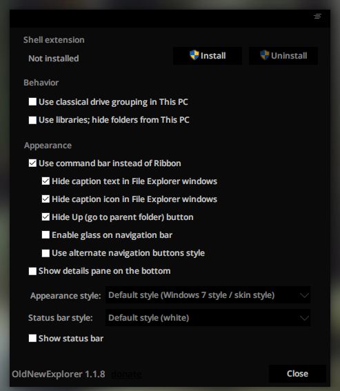
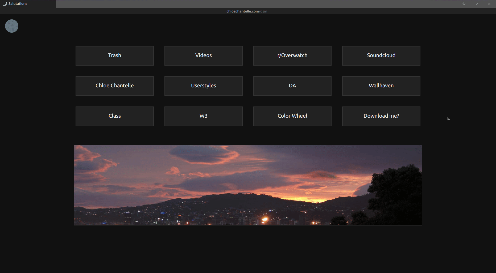
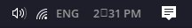

Basics
Accent Colors
Settings > Personalization > Color.
Small Taskbar
Settings > Personalization > Taskbar > Never Combine and Use Small Taskbar Buttons.
Remove Status Pane/Bars:
Shift+Alt+P to remove the status pane in Explorer.
Tools > Folder Options > View > Disable Show Status Bar.
Classic Shell makes a status bar by default, open Classic Explorer Settings to disable it.
OldNewExplorer
A v basic program to remove the ribbon and bring back the command bar.
Settings should look like this:
Classic Shell
Change the taskbar color, start menu and explorer options.
Note: Most options are irrelevent since the updates to Personalization in the Creators Update.
StartIsBack
Bring back the W7 start menu, extremely customizable.
Remove the language indicator.
Permanently remove language indicator from the taskbar.
Fix search indexing
Start menu will search through files and file contents.
Mactype
Better font rendering, includes version for W7 and W10 (also works on 8.1). Follow the instructions to install.
Refer to solutions for issues with Mactype when updating.
AHK
AutoHotKey is a fantastic hotkey tool, and for ricing it can do a few very helpful jobs like making hotkeys to certain programs, tiling, removing taskbar/titlebar icons and hiding titlebars.
Usage
Download my backups from here
Move the scripts you want to your startup folder (C:\Users\%userprofile%\AppData\Roaming\Microsoft\Windows\Start Menu\Programs\Startup)
Run the scripts and reopen your programs to see a difference
Note: Right click the script's tray icon to edit, use Windows Spy to configure tiling
List of new and most helpful shortcuts
- Win + i - Open Settings
- Win + Tab - Task View
- Win + Ctrl + Left/Right Arrow - Switch desktops
- Alt + P - Show/Hide Preview Pane
- Shift + Alt + P - Show/Hide Status Pane
- Win + G - Game bar
- Win X - Open Quick Link - Same as right clicking start button
- Win + M - Minimize all
- Win + Shift + M - Restore all
- Win + Down - Minimize window
- Win + Shift + C - Activate Cortana
- Win + Alt + D - Show/Hide Calendar
- Win + L - Lock pc
Recovery Drive
Thinking of updating drivers, playing w/ "advanced" rice, or it's your first time updating to 10?Do you have Windows 10 or want to try Windows 10? Set up a recovery drive rn.
Take Ownership
Very easy to set up, it basically just adds a context menu option to take complete ownership of a file.
If your getting an error that you don't have permission of a file this will fix that, you'll need this if your editing system files/Visual Styles.
Misc basic rice related links
Note: Nanami-tan goes into more detail of these topics.QtTabBar
Adds a lot more functionality to Explorer, including tabs, hotkeys and alternative navigation panes.
QuickView by Jundai
Extremely aesthetic image viewer, barely any functionality.
MPC-HC
It's the best video player honestly.
Foobar
If you've seen a pretty music player in a screenshot guaranteed this is (probably) it, it's portable and has every function you'd need, plus there's so many god damn skins available.
Icons
Numix - Ported from the Linux icons, reuploaded due to author deactivation.
Paper - Another port, beautifully made, reuploaded due to author deactivation.
Winremix - Material design inspired, no pack all seperate files has been updated to a pack, download the ICO's seperately from here.
Temmie - A+ aesthetic icons, little biased tbqh, no pack, all seperate files.
Flat and Kare - Beautiful square icons, all seperate files.
Minimal Folder Icons - What the name says, available in a range of colors, all seperate files, and they actually scale down correctly!
Browser
I'm not going to go super into detail as this is a W10 guide not a browser theme/startpage FAQ, but here are some of the basics explained:
Person has changed how a site looks? How?
Browser theme, they used Stylish for Firefox or Stylish for Chrome, and a CSS script that changes how it appears for only them, find themes on Userstyles or make your own with Inspect Element and a bit of CSS knowledge. On later versions of Firefox they've killed Stylish (rip), so instead you can use Stylus for website themes (when it wants to work).
But their browser looks so nice??
It's either Firefox or Vivaldi. You can customize how Firefox looks with Stylish or by creating a UserChrome.css. You can either search for an updated UserChrome or I uploaded mine here. You can customize Vivaldi by editing the browser CSS, again you can search for Vivaldi CSS or I uploaded mine.
You can customize Chrome's browser, but not by very much, by using Chrome Theme Maker.
I don't know how to do the thing, where are the premade themes??
Browse on Userstyles for web themes.
You can browse the Firefox tag of Userstyles for browser themes lmao jk Userstyles is fucking trash now, browse threads or look on Github for browser themes.
Pretty new tab page with links on it?
Startpages are generally local (can be hosted) webpages, here's one I made as an example of what they are.
They usually contain links, have some pretty background, tell you the weather, refer to you by name etc etc.
How on earth do I make one and/or get started??
Edit someone elses, there are so many that people upload and share, find one and rip it apart while searching on W3 for anything you don't understand to teach yourself HTML/CSS. There's also online courses you can do to learn more.
Popular startpages to download.
There's also a pretty popular HTML/CSS general on /wsg/ which you can lurk/post in.
Solutions
Prevent automatic updates
You should also do this w/ your drivers as updating both W10 and your drivers has been known to cause problems.
When updating make sure you make a system restore point prior to installing the update, uninstall UxStyle/UltraUXThemePatcher, disable the theme you're using, and remove Mactype from startup. Can't be too careful w/ the last few big W10 builds.
About "muh privacy" with W10 or "are the NSA watching me on pornhub just because I updated my PC?"
No Microsoft Is Not Spying On You With Windows 10
What Windows 10's "Privacy Nightmare" Settings Actually Do
Windows 10 disabling pirated software? Not so fast
TLDR; No, take your tin foil hat off and chill out.
Automatically restarting after updating
Fix the issue of Windows automatically restarting after updating.
Fix broken UI issues
Start menu stops working, W10 apps don't open, blue screen of death, doesn't perform properly?
Restart explorer, if not then your PC, it's depressing how much time you can waste troubleshooting when restarting either fixes most problems.
But, it could also be corrupt files or broken W10 apps, which happens a lot if you didn't clean install W10 and just updated from W7, so look into it.
Thumbnails don't show?
Square in taskbar clock
Fix issue where a square shows up in your taskbar clock instead of a semicolon.
Go to HKCU\ControlPanel\International
Double click on "sShortTime"
Open up Character Map, switch to unicode and search for "colon"
Pick the last one that shows up (U+A789: Modifier Letter Colon)
Copy that and replace the colon in the sShortTime string
Hit "OK" and wait for the clock to change to the next minute
Program icons and file thumbs don't show
Open Regedit and go to
HKEY_LOCAL_MACHINE\SOFTWARE\Microsoft\Windows\CurrentVersion\Explorer\ShellIconsChange the value:
String 29 - C:\Windows\System32\shell32.dll,29
Or if you have string 9 - C:\Windows\System32\shell32.dll
Disk usage issue on Fall Update (1709)
On 1709 there's a common issue of the disk space usage jumping to 100% and staying there because of Windows services.
To fix stop Superfetch and Windows Search, if you notice an immediate difference then disable them from startup.
Neither affect how your PC runs/searches, these are purely processes that run in the background.
Guide to stopping/disabling services.
Stop Cortana Defaulting to Edge and Bing
Change the default web browser in Cortana:Open up Settings > System > Default Apps > Choose default apps by protocol > Url:Microsoft Edge > EdgeDeflector.
Change the default search engine in Cortana:
Firefox: Bing To Google.
Chrome: Chrometana (such a good name).
Visual Styles
Create a system restore point before delving into any of this.
Don't use Visual Styles that aren't for your build, it will brick your PC. Always make sure your using the latest version of UltraUX, and when updating your patcher uninstall your old version prior to updating.
In the start menu search for "winver" and use that to check what build you're using.
Patching
On the April Update (1803), Fall Update (1709), the Creators Update (1703), and the Anniversary Update (1607) you install themes how you always have.
1. Install the latest version of UltraUXThemePatcher from the source (rip UxStyle).
Note: Cleo also hosts the latest versions if the site is down2. Copy the theme folder to C:\Windows\Resources\Themes.
3. Make sure the .theme file is in Resources\Themes and the .msstyles is in Resources\Themes\ThemeName.
4. Settings > Personalization > Themes > Apply the theme.
If your on Build 1511 patch using this guide.
Patching FAQ:
UxStyle doesn't work/gives error?
Uninstall previous versions of UxStyle and/or UltraUXThemePatcher, use Microsoft's Fix It program or CCleaner to uninstall the old versions completely.
After I lock my pc/put it to sleep parts of the theme breaks or when switching between themes the patcher doesn't work anymore?
Known UxStyle problem, switch to Aero theme, uninstall and reinstall UxStyle, re-enable your theme.
Difference between UxStyle and UltraUXThemePatcher?
UxStyle doesn't replace system files, which right now means that it only temporarily patches and works like a band-aid, so you have to run the .exe again or reapply themes when you log off/restart etc, it's safe but it can be inconvenient.
UltraUXThemePatcher replaces system files which can cause problems, it's also been known to cause problems when uninstalling and leave users with a bsod, but it doesn't need reinstalling after shutting down and also doesn't require WinAero to change fonts.
I broke explorer/broke my pc, halp?
That's why you create a system restore point. And make a recovery drive, if you don't have one and you're using W10, change that immediately.
How do I make my own/edit someones Visual Style?
Using Windows Style Builder, I made a guide for it here.
Advanced
Registry Tweaks
Note: Create a restore point and triple check what you're doing.Change default open folder icon.
Change drive icons - Follow method 3.
Remove One Drive, Network etc from Navigation Pane
Remove Display Settings from desktop context menu
Remove Personalize from desktop context menu
Custom Quick Access icon: Change data path to the location of your custom icon, here's some you can use.
Add programs to desktop context menu.
Remove shortcut arrow on folders and programs: Method 3, leave the field blank, restart Explorer.
Remove border for video files: Follow Method 2.
Change default file type icons: Change the file icon for all .png's or .mp4's etc.
Debloat
Disable features you don't use, follow this guide.
WinAero
Change fonts, border size, titlebar color and much more. It can be buggy, and could easily break explorer. Be careful w/ a lot of the options, I'd suggest only using it to globally change fonts.
Custom Start Menu Tiles
Tile.png is a template of the size and placement of the icon that your tiles should have.
Usage
First make a shortcut (make sure it's a .lnk) of the program you want to change, then go to "C:\Users\USERNAME\AppData\Roaming\Microsoft\Windows\Start Menu\Programs" and move it there.
Then find the path in MyTile and change the image, if you did it correct the image will change immediately.
Note: Some programs, especially 10 apps, won't show up in MyTile because they won't be a .lnk.
To set it back to the default image delete the tile and pin it again.